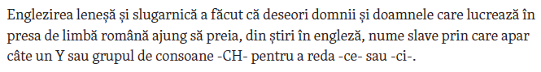

Chirilice
Nu sunt nici fan Europa Liberă, nici fan Dan Alexe.
Dar articolul lui Dan Alexe, apărut pe site-ul moldova.europalibera.org, m-a uns pe suflet.

Articolul din Wikipedia precizează regulile de transliterare pentru mai multe limbi, inclusiv limba rusă, bulgară sau ucraineană (alfabetul chirilic).
De asemenea, sunt enumerate reperele bibliografice necesare.